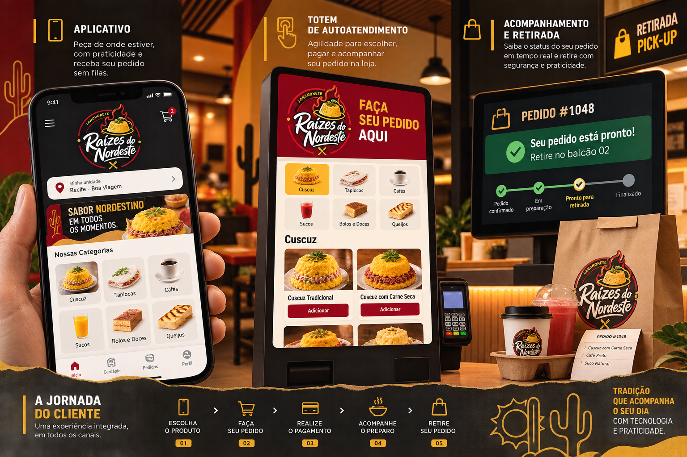
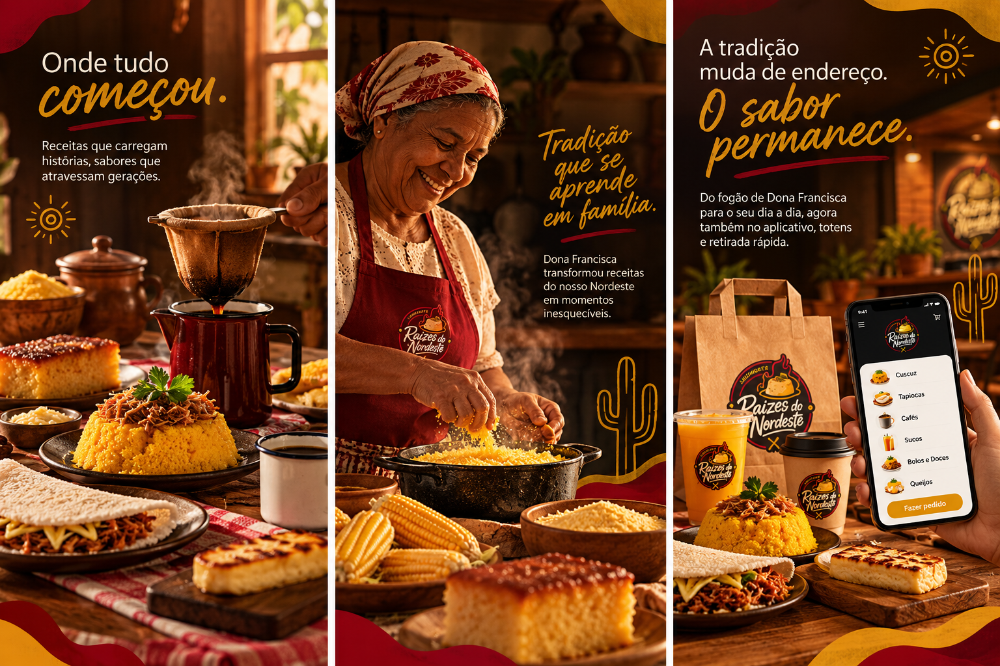
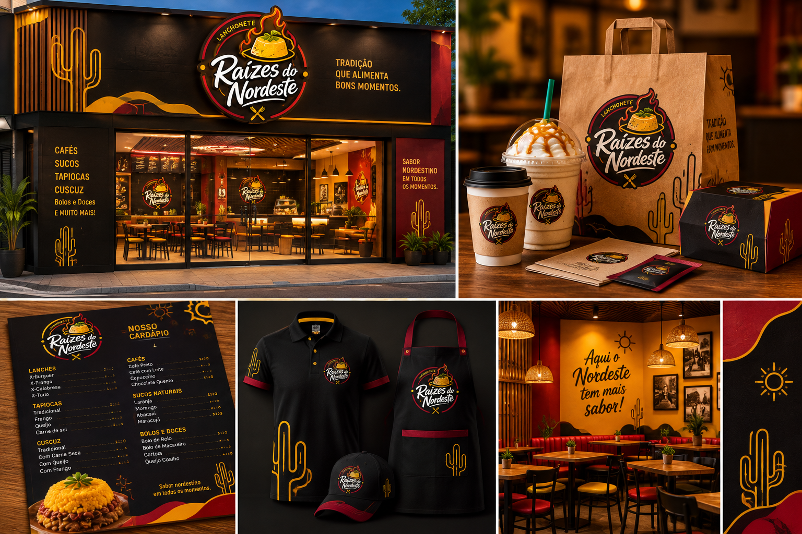
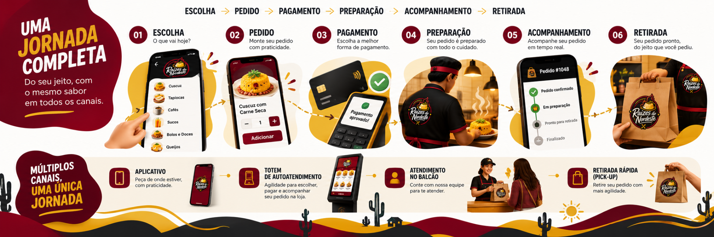
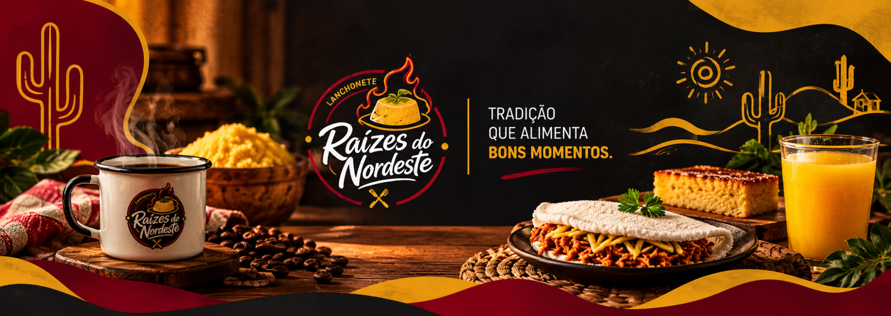

Aplicativo e site
Peça de onde estiver, com praticidade.
Lanches, cafés, sucos e quitandas da nossa terra, com qualidade, praticidade e o carinho de quem sabe que comida boa também conta histórias.

O que começou em Recife com Dona Francisca e seus dois filhos cresceu para uma rede de lanchonetes que leva o sabor do Nordeste a diferentes cidades. A essência permanece: receitas regionais, cuidado no preparo e acolhimento em cada atendimento.
Hoje, a tradição encontra a tecnologia para tornar cada pedido mais simples — pelo aplicativo, totem, balcão ou retirada rápida.
Conheça nossas unidades ↗A mesma qualidade e o mesmo sabor, com liberdade para escolher como pedir e praticidade para acompanhar.

Peça de onde estiver, com praticidade.

Agilidade para escolher e enviar o pedido.

Conte com nossa equipe para atender.

Acompanhe o preparo e retire com facilidade.
Selecione a unidade e veja o que está disponível.
Monte seu pedido com praticidade.
Simulação de resposta de serviço externo.
A equipe prepara tudo com cuidado.
Consulte o estado atual do pedido.
Seu pedido pronto, do jeito que pediu.
Acumule pontos nas compras e troque por benefícios. Uma forma de agradecer por fazer parte da nossa história.
Conhecer benefícios ↗Descubra combos e ofertas demonstrativas. As campanhas podem variar conforme a unidade.
Explorar cardápio ↗Conheça a experiência integrada que conecta aplicativo, totem, atendimento humano e retirada rápida em uma única jornada.
Ver acompanhamento ↗